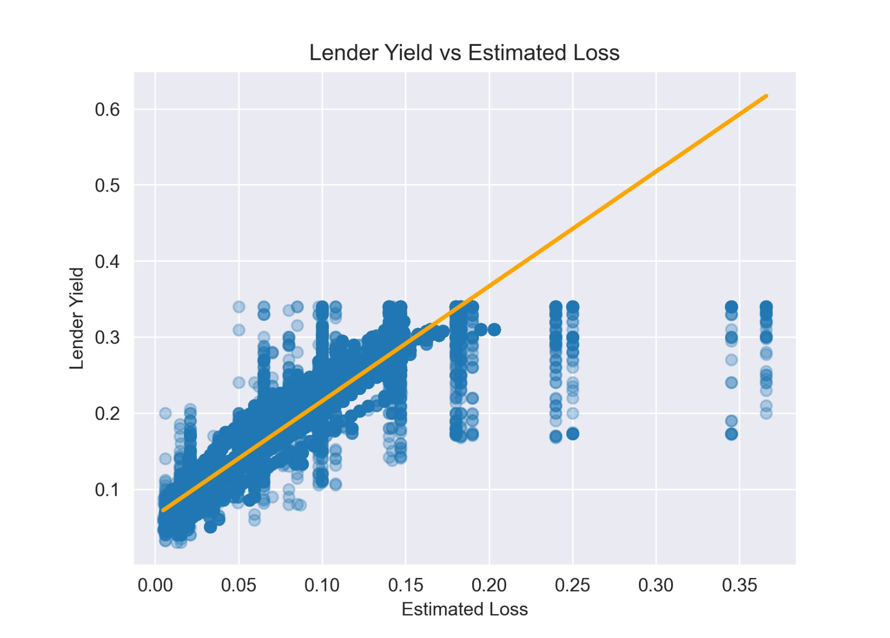
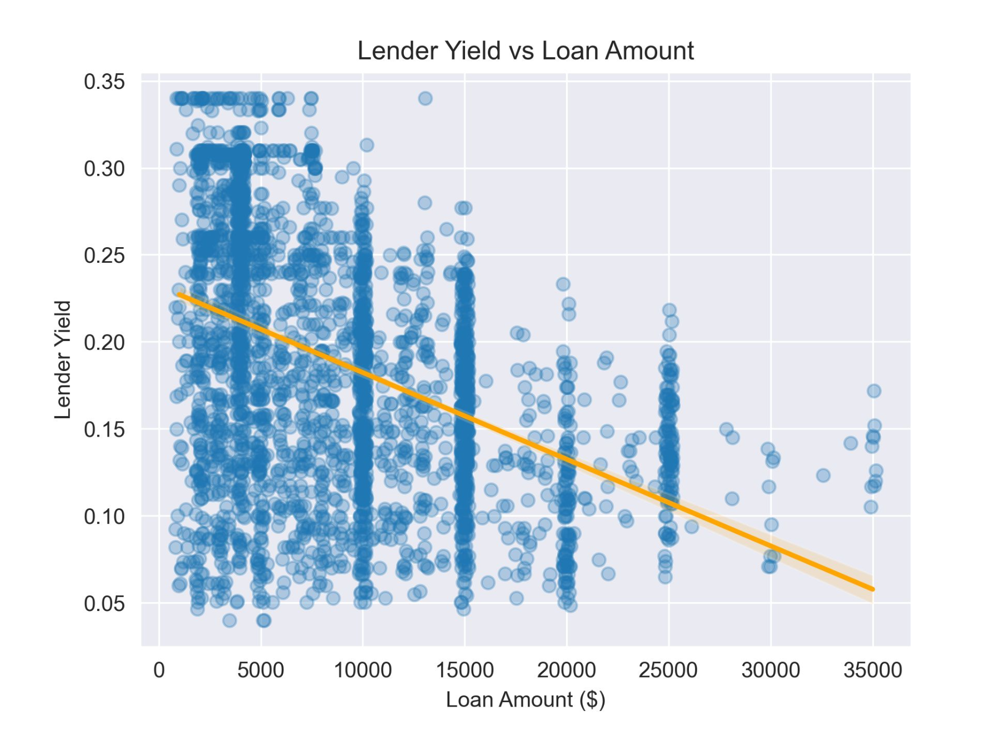
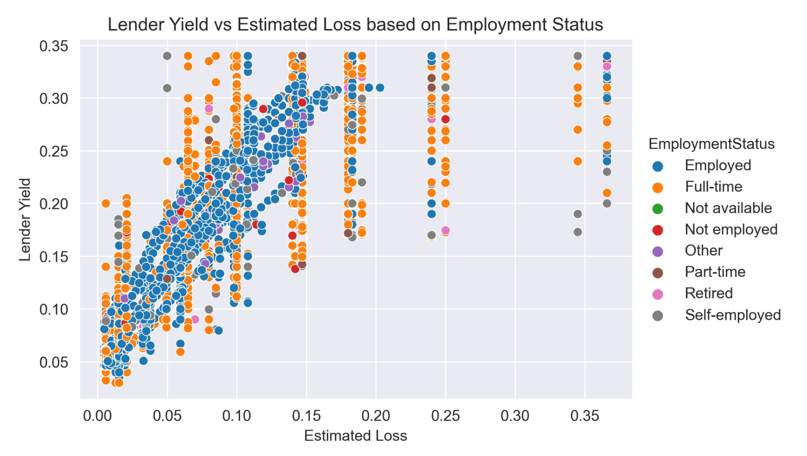
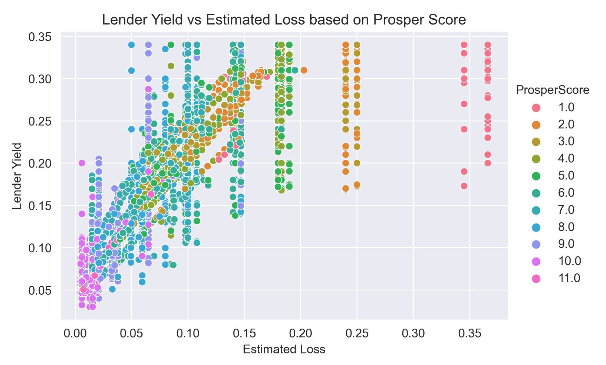
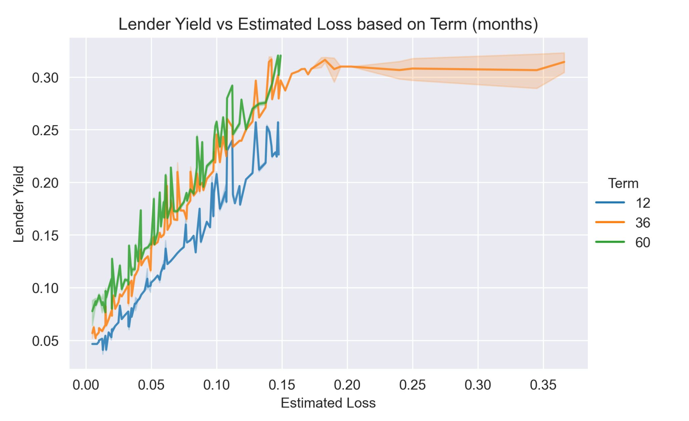

Prosper Loan
Lender yields vs estimated loss
This project is centered around data exploration in Python. The data was wrangled and cleaned before conducting Univariate, Bivariate and Multivariate exploration. The findings are presented in the report below.
Investigation Overview
In the interest of lenders, the goal was to explore the nature of borrowers to determine which loans result in the highest lender yields whilst holding the lowest estimated loss. The exploration dives into the factors influencing the relationship between lender yield and estimated loss. Factors include loan categories, employment status, prosper score and loan terms.
Dataset Overview
This data set contains 113,937 loans with 81 variables on each loan. Although the dataset contains information both interesting to borrowers and lenders, only columns relevant to factors influencing lender loan yields were focused on in the exploration. I.e. Prosper Score, Loan Term, Lender Yield, Estimated Yield and Loss, Loan Category, Employment Status, Income Range, Debt To Income Ratio, Loan Amount and Delinquencies.
Wrangling Process
Relational between the Lender Yield vs Estimated Loss given the Employment Status
A positive correlation is observed between with estimate loss and lender yield. The higher the lender yield the higher the estimated loss. Various factors could increase lender yield such as higher interest rates, which are usually implemented when the loan involves risk factors. We also see some unexpected deviation where the lender yield significantly varies given a specific estimated loss.
Relational between the Lender Yield vs Loan Amount
We can observe a negative correlation between lender yield and loan amount. The larger the loan, the smaller the lender yield. One could expect the higher loans to produce a larger lender yield, but the opposite is observed. As previous observations were made that over 40% of borrowers had loans of around 5000 USD, 40 % of borrowers had at least 10 current credit lines, and over 50% of borrowers taking out loans for debt repayment this yield correlation is perhaps not too surprising.
Relational between the Lender Yield vs Estimated Loss given the Employment Status
We previously observed a positive correlation between the lender yield and estimated loss. The relational plot includes employee status to produce a more granular understanding of this correlation. Key differences between borrowers with an employment status of employed versus full time is observed. The trend of the majority of employed borrowers follow fixed curves in the estimated loss vs lender yield space, however full time employees do not follow these trends and have a much larger spread in lender yield for a given estimated loss.
Relationship between Lender Yield vs Estimated Loss given the Prosper Score
Here we observe the estimated losses relationship with the prosper score, where the lower the prosper score the higher the estimated loss. Although the same is observed for the lender yield and prosper score relationship, the lender yield varies immensely for given estimated losses. Some factors such as borrower interest rate, delinquent payments, debt to income ratio and income range may potentially increase or decrease lender yield.
Relationship between the lender yield and estimated loss given the loan term
Differences can be observed in the lender yield for the three different loan terms. 12 month loans have a lower lender yield, but similar estimated loss compared to 36 month and 60 month loans. 60 month loans have the highest lender yield. We also see that lender yields around 0.3 for the 36 month term have a large range of estimated losses where estimated losses significantly increase.
